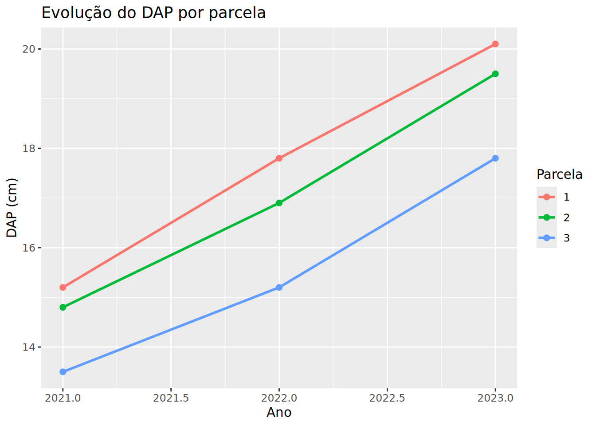

# A tibble: 3 × 4
parcela dap_2021 dap_2022 dap_2023
<int> <dbl> <dbl> <dbl>
1 1 15.2 17.8 20.1
2 2 14.8 16.9 19.5
3 3 13.5 15.2 17.8Dia 3 — Tarde
Dia 3 — Tarde | 4 horas
Objetivos
- Entender o conceito de dados organizados (tidy data)
- Transformar dados entre formato largo e longo com
pivot_longer()epivot_wider() - Importar dados de múltiplas fontes (múltiplas abas Excel, múltiplos CSVs)
Tidy Data
Dados organizados (tidy data) seguem três regras:
- Cada coluna é uma variável
- Cada linha é uma observação
- Cada célula é um valor
Este conceito, proposto por Hadley Wickham, é a base para todo o tidyverse. Quando seus dados estão organizados, todas as funções funcionam perfeitamente juntas.
Formato largo vs formato longo
Formato largo (comum em planilhas Excel, visualização humana):
| parcela | dap_2021 | dap_2022 | dap_2023 |
|---|---|---|---|
| 1 | 15.2 | 17.8 | 20.1 |
| 2 | 14.8 | 16.9 | 19.5 |
Formato longo (ideal para análise e ggplot2):
| parcela | ano | dap |
|---|---|---|
| 1 | 2021 | 15.2 |
| 1 | 2022 | 17.8 |
| 1 | 2023 | 20.1 |
| 2 | 2021 | 14.8 |
| 2 | 2022 | 16.9 |
| 2 | 2023 | 19.5 |
pivot_longer() — largo → longo
# A tibble: 9 × 3
parcela ano dap
<int> <dbl> <dbl>
1 1 2021 15.2
2 1 2022 17.8
3 1 2023 20.1
4 2 2021 14.8
5 2 2022 16.9
6 2 2023 19.5
7 3 2021 13.5
8 3 2022 15.2
9 3 2023 17.8# Agora podemos analisar e plotar
inv_longo <- inv_largo %>%
pivot_longer(starts_with("dap_"), names_to = "ano", values_to = "dap", names_prefix = "dap_") %>%
mutate(ano = as.numeric(ano))
inv_longo %>%
ggplot(aes(x = ano, y = dap, color = factor(parcela))) +
geom_line(size = 1) +
geom_point(size = 2) +
labs(title = "Evolução do DAP por parcela", x = "Ano", y = "DAP (cm)", color = "Parcela")
pivot_wider() — longo → largo
# A tibble: 30 × 4
parcela `Eucalyptus Grandis` `Eucalyptus Urophylla` `Pinus Taeda`
<dbl> <dbl> <dbl> <dbl>
1 1 19.8 4.33 12.6
2 2 26.9 8.17 5.08
3 3 26.3 1.24 9.81
4 4 26.8 2.00 10.3
5 5 28.9 3.24 10.9
6 6 27.2 2.73 12.2
7 7 31.1 2.22 5.00
8 8 13.3 0.548 2.44
9 9 26.5 1.98 3.95
10 10 16.5 2.28 5.01
# ℹ 20 more rowsSeparar e unir colunas
# A tibble: 3 × 2
talhao parcela
<chr> <chr>
1 T1 P1
2 T1 P2
3 T2 P1 Preencher combinações e valores ausentes
# A tibble: 90 × 3
parcela especie n
<dbl> <chr> <int>
1 1 Eucalyptus Grandis 21
2 1 Eucalyptus Urophylla 4
3 1 Pinus Taeda 15
4 2 Eucalyptus Grandis 23
5 2 Eucalyptus Urophylla 9
6 2 Pinus Taeda 10
7 3 Eucalyptus Grandis 26
8 3 Eucalyptus Urophylla 2
9 3 Pinus Taeda 19
10 4 Eucalyptus Grandis 26
# ℹ 80 more rowsImportação de múltiplos arquivos
Múltiplas abas de um Excel
# A tibble: 150 × 4
talhao parcela volume_m3 area_ha
<chr> <dbl> <dbl> <dbl>
1 Talhão_1 23 143. 2.04
2 Talhão_1 29 121. 3.01
3 Talhão_1 18 155. 1.81
4 Talhão_1 9 209. 2.24
5 Talhão_1 24 280 3.3
6 Talhão_1 5 226. 1.87
7 Talhão_1 14 218. 3.22
8 Talhão_1 20 222. 2.96
9 Talhão_1 10 254. 2.8
10 Talhão_1 11 230. 1.86
# ℹ 140 more rows# A tibble: 150 × 4
talhao parcela volume_m3 area_ha
<chr> <dbl> <dbl> <dbl>
1 Talhão_1 23 143. 2.04
2 Talhão_1 29 121. 3.01
3 Talhão_1 18 155. 1.81
4 Talhão_1 9 209. 2.24
5 Talhão_1 24 280 3.3
6 Talhão_1 5 226. 1.87
7 Talhão_1 14 218. 3.22
8 Talhão_1 20 222. 2.96
9 Talhão_1 10 254. 2.8
10 Talhão_1 11 230. 1.86
# ℹ 140 more rowsMúltiplos CSVs de uma pasta
character(0)Rows: 0
Columns: 0Lidando com dados ausentes (NA)
# A tibble: 6 × 2
coluna n_na
<chr> <int>
1 parcela 0
2 arvore 0
3 especie 0
4 dap 0
5 altura 0
6 volume 0# A tibble: 1,131 × 6
parcela arvore especie dap altura volume
<dbl> <dbl> <chr> <dbl> <dbl> <dbl>
1 1 1 Eucalyptus Grandis 21.7 46 0.876
2 1 2 Pinus Taeda 20.5 44 0.699
3 1 3 Eucalyptus Grandis 26.2 51.1 1.24
4 1 4 Pinus Taeda 12.6 38.7 0.217
5 1 5 Eucalyptus Grandis 19.5 49.8 0.746
6 1 6 Eucalyptus Grandis 17.9 44.3 0.596
7 1 7 Pinus Taeda 23.5 49.8 1.02
8 1 8 Eucalyptus Grandis 27 52.9 1.56
9 1 9 Eucalyptus Grandis 24.5 48.9 1.11
10 1 10 Pinus Taeda 27.5 50.2 1.57
# ℹ 1,121 more rows# A tibble: 1,131 × 6
parcela arvore especie dap altura volume
<dbl> <dbl> <chr> <dbl> <dbl> <dbl>
1 1 1 Eucalyptus Grandis 21.7 46 0.876
2 1 2 Pinus Taeda 20.5 44 0.699
3 1 3 Eucalyptus Grandis 26.2 51.1 1.24
4 1 4 Pinus Taeda 12.6 38.7 0.217
5 1 5 Eucalyptus Grandis 19.5 49.8 0.746
6 1 6 Eucalyptus Grandis 17.9 44.3 0.596
7 1 7 Pinus Taeda 23.5 49.8 1.02
8 1 8 Eucalyptus Grandis 27 52.9 1.56
9 1 9 Eucalyptus Grandis 24.5 48.9 1.11
10 1 10 Pinus Taeda 27.5 50.2 1.57
# ℹ 1,121 more rowsExercícios
Exercício 1
Dada a tabela no formato largo:
# A tibble: 3 × 4
parcela dap_2021 dap_2022 dap_2023
<int> <dbl> <dbl> <dbl>
1 1 15.2 17.8 20.1
2 2 14.8 16.9 19.5
3 3 13.5 15.2 17.8Converta para formato longo com pivot_longer().
Resultado esperado:
# A tibble: 9 × 3
parcela ano dap
<int> <dbl> <dbl>
1 1 2021 15.2
2 1 2022 17.8
3 1 2023 20.1
4 2 2021 14.8
5 2 2022 16.9
6 2 2023 19.5
7 3 2021 13.5
8 3 2022 15.2
9 3 2023 17.8Exercício 2
Calcule o volume total por parcela × especie no inv_florestal. Use pivot_wider() para criar uma tabela com espécies nas colunas.
Resultado esperado:
# A tibble: 30 × 3
parcela `Eucalyptus Grandis` `Pinus Taeda`
<dbl> <dbl> <dbl>
1 1 10.3 6.8
2 2 11.2 7.1
3 3 8.9 5.4Exercício 3
Importe todas as abas do arquivo talhoes.xlsx e combine em um único data frame. Quantas linhas no total?
Resultado esperado:
[1] 150Exercício 4
Verifique com complete() se toda parcela tem registro para toda espécie. Preencha combinações ausentes com volume 0.